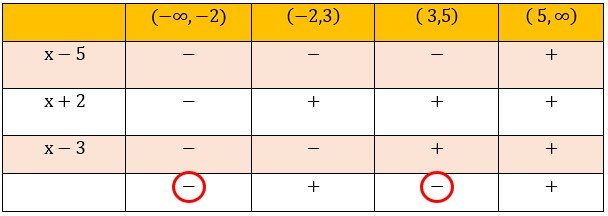

| 1. Rearrange the inequality so that the right-hand side is zero. |
\( \frac{1}{x + 2} - \frac{2}{x - 3} ≤ 0\) |
| 2. Find the common denominator |
\( \frac{x - 3 - 2}{(x + 2)(x - 3)} ≤ 0\) |
| 3. Get inequality with linear factors. |
\( \frac{x - 5}{(x + 2)(x - 3)} ≤ 0\) |
| 4. Find all critical values |
\( x = 5 ; x = 2 ; x = 3\) |
| 5. Table of Sign |
 |
| 6. Write down the solution |
\((-∞ , -2)\) U \((3 , 5]\) |